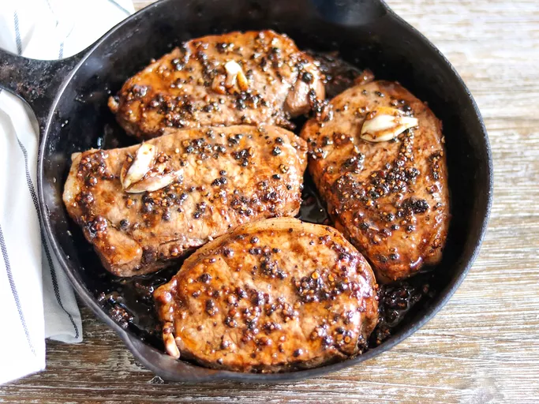

Pork Chops

Ingredients
- 4 (1 1/2 inches thick) boneless center-cut pork chops
- 4 tablespoons Worcestershire sauce
- 4 tablespoons olive oil, divided
- 2 cloves garlic, crushed
- 2 tablespoons coarsely ground black pepper
Directions
- Combine pork chops, Worcestershire, 3 tablespoons olive oil, garlic, and black pepper
in a large, resealable plastic bag. Marinate chops in the mixture for about 30 minutes.
- Heat remaining oil in a heavy skillet over medium-high heat. Remove pork from the marinade
and place into the skillet to brown on all sides, 5 to 7 minutes. Reduce heat and let simmer,
basting with marinade during cooking, until no longer pink in the centers, 15 to 20 minutes.
An instant-read thermometer inserted into the center should read 145 degrees F (63 degrees C).